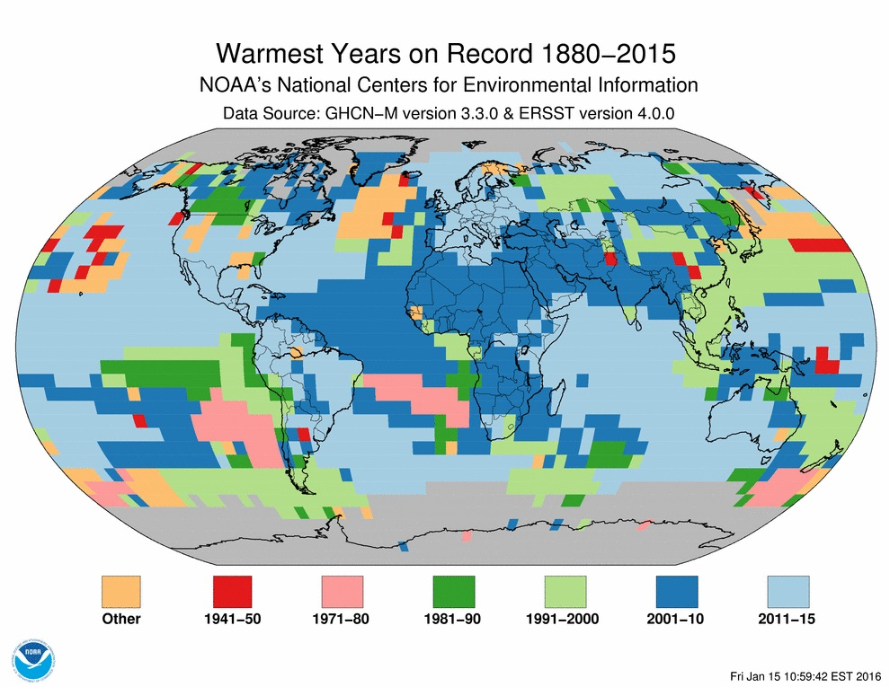
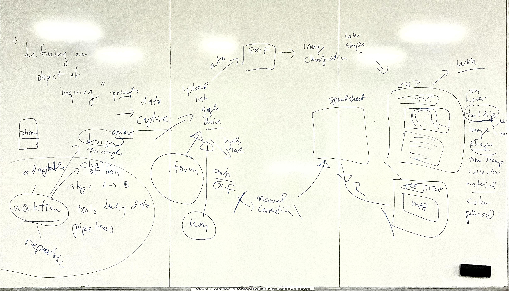
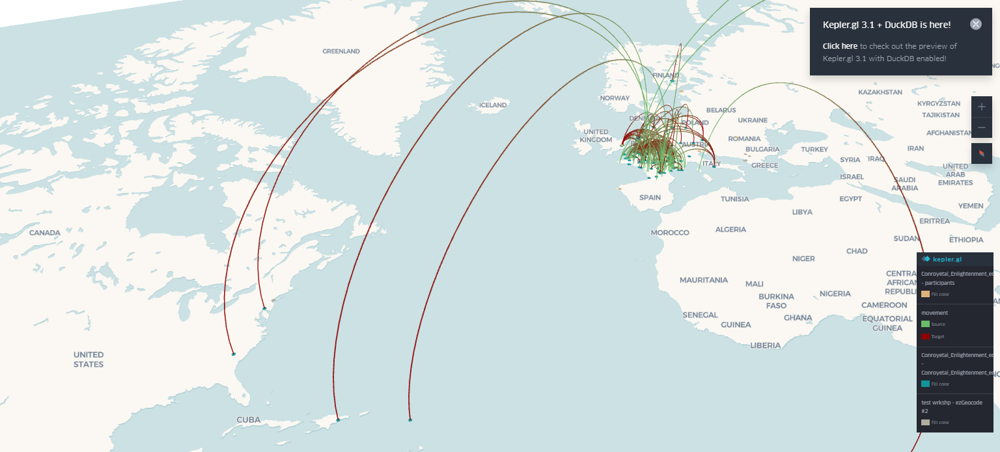
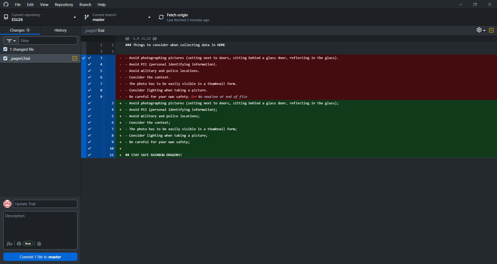
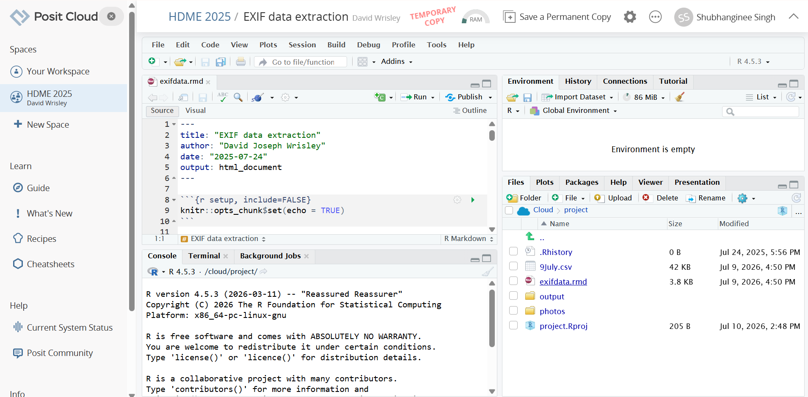
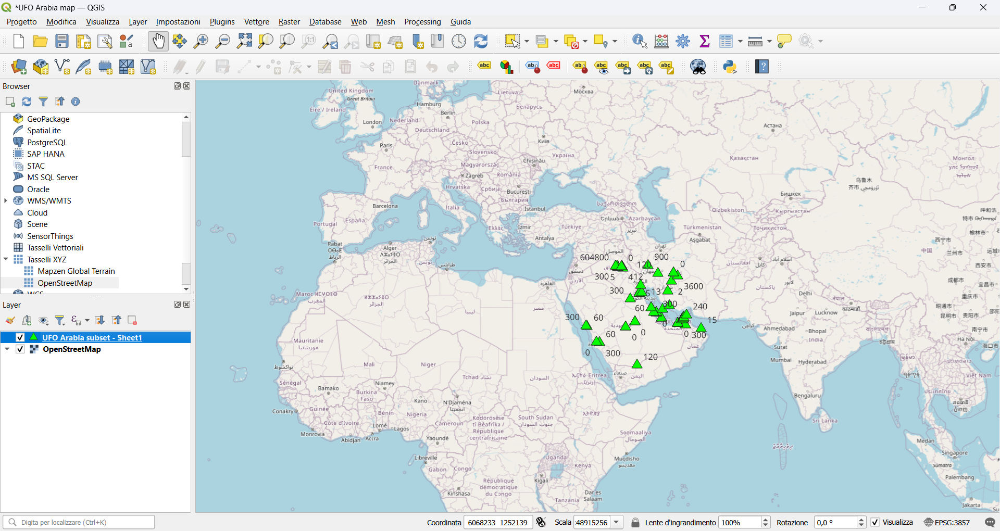
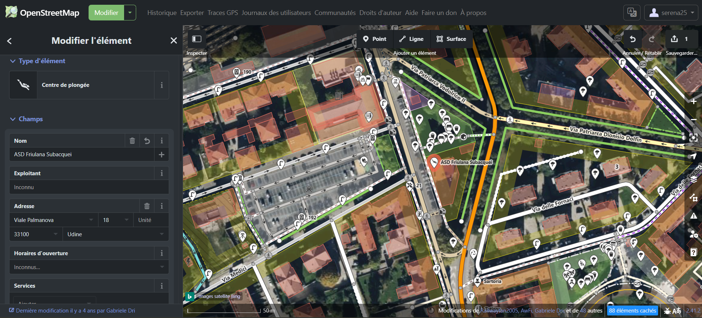
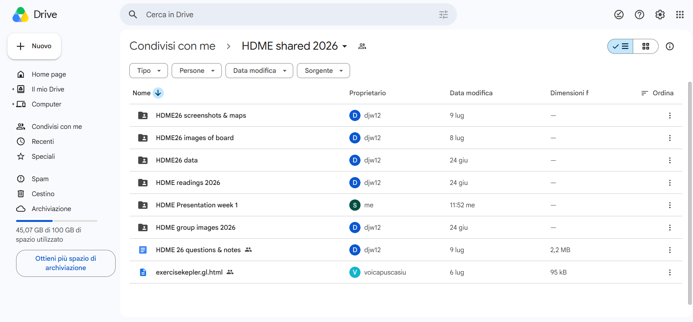

Bienvenue à Besançon,
fellow rainbow dragons!
Welcome to our project! As fellow rainbow dragons in Besançon, we set out to explore spatial narratives by combining critical geography with digital tools. We learned that a map is not just a coordinate plot; it is a communication medium that bridges technical workflows with conceptual choices.
Visual & Spatial Communication
We realized how easily traditional maps can fail due to visual clutter, lack of context, and hidden methodological steps. Our goal was to bridge the gap between design and data to make maps that are transparent, intuitive, and engaging.
The Mapping Process
How did we build our map? We divided our journey into two key parts: a technical side (fieldwork, georeferencing, and data cleaning) and a thinking side (critical analysis, spatial theory, and data curation).
What is a bad map?
To understand how to build a good map, we started by analyzing what makes a map "bad." We looked at the visual, technical, and communicative choices that can lead to failures.
1 Presentation & Aesthetics
We saw how a bad map suffers from poor layout decisions. Without visual hierarchy, everything competes for attention. Common issues we identified include clashing color palettes, unreadable typography, overlapping labels, and missing scales.
2 Communication Failures
If the audience cannot extract the core message quickly, the map fails to communicate. We learned that incomplete legends, missing North arrows, and a lack of geographical context render data meaningless.
3 The Unexplained Workflow
A major failure we discussed in the workshop is leaving the mapping workflow unexplained. Bad maps often present data as absolute truth while hiding the distortions, design choices, and curation decisions made behind the scenes.

How to Create a Good Map: Step 1
For us, mapping was primarily a critical thinking exercise. Our process started on the classroom whiteboard, where we drafted our research questions and mapped out our workflow.
Formulating Research Questions
What are we mapping and why? We learned that a good map starts with a clear research question. In Besançon, we didn't just map photos; we sought to trace our exploration pathways and capture our cohort's spatial footprint.
Designing the Workflow
We designed a workflow from data collection (using our smartphones to log location services) to data formatting (cleaning CSV tables and extracting EXIF coordinates) to ensure our mapping pipeline was reproducible.
Critical Data Curation
We learned that cartography is the art of selection. We had to decide what data to keep, how to handle errors, and how to transparently document our collection limits.

The Tools We Mastered
During the workshop, we worked with a combination of cloud platforms, local desktop software, and data management pipelines to build our environment.

Kepler.gl
What we did: We practiced visualizing the geographical footprints of Enlightenment figures, mapping their birth and death locations, nationalities, and occupations.
How we used it: Kepler.gl functioned as our spatial visualization dashboard, rendering birth-to-death migration flows using arc layers, mapping demographic density, and comparing historical life trajectories across Europe and the Americas.
GitHub & GitHub Pages
What we did: We used GitHub Desktop to track local file edits, manage branches, and commit documentation updates for our project (repository `ESU26`).
How we used it: We created our first website using GitHub, both locally and in the cloud. We used GitHub Desktop to write down our project's ethical principles in a dedicated page, then pushed them to the repository for publication online. Now you can know what to watch out for when collecting data in the field. Please stay safe, rainbow dragons!


Posit.cloud / RStudio
What we did: We ran the R Markdown notebook `exifdata.rmd` (created by David Joseph Wrisley) to automatically extract metadata and GPS logs from fieldwork photos.
How we used it: Posit.cloud provided a shared, cloud R environment (`HDME 2025` project) to compile spatial datasets, clean coordinates, and output a structured spreadsheet (`9July.csv`) for mapping.
QGIS (Long Term Release)
What we did: We tested QGIS for mapping UFO sightings in the Arabian Peninsula (could they be other dragons?), importing a sheet subset dataset over an OpenStreetMap basemap.
How we used it: QGIS served as our core desktop geographical information system (GIS), where we applied coordinate reference systems (EPSG:3857), styled data points using customized symbols, and labeled records.


OpenStreetMap (OSM)
What we did: We each practiced editing OpenStreetMap for our own hometowns, contributing localized points of interest (POIs) to the global map database.
How we used it: We used OpenStreetMap's web-based iD editor to learn how to contribute to open geographic data. As shown in our example based on Udine (Italy), everyone can improve the map by adding missing points of interest, changing names and categories, or reshaping the landscape. So now go map the world, fellow rainbow dragons!
Overpass Turbo
What we did: We designed custom Overpass API queries, exploring and extracting specific feature tags from the OpenStreetMap database.
How we used it: As shown in our example querying helipads (`nwr["aeroway"="helipad"]`) in the Himalayas, Overpass Turbo allowed us to selectively retrieve vector nodes and export them as clean XML or GeoJSON datasets.

Supporting Infrastructure
These platforms and assistants integrated with our entire workflow, serving as collaborative foundations and debugging partners for all the core mapping processes.

Google Drive
What we did: We established a shared cohort directory named `HDME shared 2026` to organize workshop materials, screenshots, and readings.
Cross-Platform Use: Google Drive acted as our universal data hub, housing subfolders for shared screenshots, whiteboard session images, datasets, presentations, and collaborative Kepler map files (`exercisekepler.gl.html`).
AI Curation & Coding Assistants
What we did: We requested assistance in debugging custom map scripts, resolving coordinate spacing anomalies, and styling complex page layouts.
Cross-Platform Use: Conversational AI served as our digital co-pilot for writing clean JavaScript, fixing CSS overflow bugs, and transforming raw EXIF lists into clean spatial tables ready for web visualization.
Our Learning Syllabus
These tools and setup guides were part of our workshop preparation led by Prof. David Joseph Wrisley and Dr. Voica Pușcașiu. You can check out the official HDME preparation syllabus for setup details, QGIS launch tips, and instructions on location logging.
Open Workshop Page